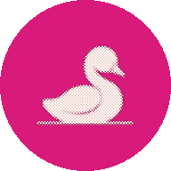
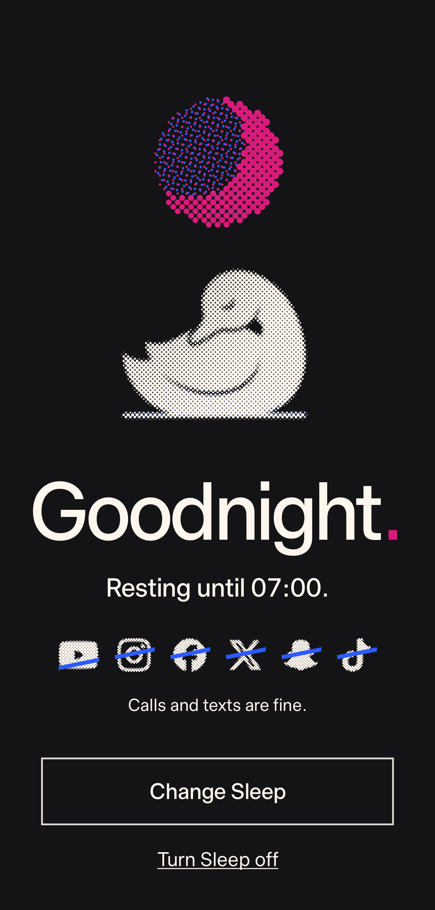

<!doctype html>
<html lang="en">
<head>
<meta charset="utf-8">
<title>Idyll showcase</title>
<link rel="stylesheet" href="../../fonts.css">
<style>
/* Two short Idyll showcase videos. ?v=tour (19.5 s) | keep (16 s), &fmt=story (1080 x 1920) | square (1080 x 1080).
   Deterministic: window.seek(t) draws the frame at t seconds; window.DURATION is the length.
   Story text stays inside 250 to 1670 (Instagram's story safe zone). Screens are the Android app's own renders, in showcase-shots/. */
:root { --paper: #f6f5f1; --ink: #141416; --pink: #d81b7a; --blue: #2d5bff; --cream: #fff6ee; --night: #141416;
  --sans: "Timeless Sans", "Helvetica Neue", Arial, sans-serif; --mono: "Paper Mono", ui-monospace, Menlo, monospace; }
* { box-sizing: border-box; }
html, body { margin: 0; width: 1080px; overflow: hidden; background: var(--night); -webkit-font-smoothing: antialiased; }
h1, h2, p { margin: 0; }
#stage { position: relative; width: 1080px; overflow: hidden; }
.scene { position: absolute; inset: 0; overflow: hidden; display: none; }
.scene > .in { position: absolute; inset: 0; will-change: transform; }
.magenta { background: var(--pink); color: var(--cream); }
.blue { background: var(--blue); color: var(--cream); }
.night { background: var(--night); color: var(--cream); }
.paper { background: var(--paper); color: var(--ink); }
.pk { color: var(--pink); font-weight: inherit; } .ik { color: var(--ink); font-weight: inherit; } .bk { color: var(--blue); font-weight: inherit; }
.crop { --c: var(--cream); --l: 22px; position: absolute; inset: 40px; pointer-events: none; z-index: 30;
  background:
    linear-gradient(var(--c), var(--c)) 0 0 / var(--l) 2px no-repeat, linear-gradient(var(--c), var(--c)) 0 0 / 2px var(--l) no-repeat,
    linear-gradient(var(--c), var(--c)) 100% 0 / var(--l) 2px no-repeat, linear-gradient(var(--c), var(--c)) 100% 0 / 2px var(--l) no-repeat,
    linear-gradient(var(--c), var(--c)) 0 100% / var(--l) 2px no-repeat, linear-gradient(var(--c), var(--c)) 0 100% / 2px var(--l) no-repeat,
    linear-gradient(var(--c), var(--c)) 100% 100% / var(--l) 2px no-repeat, linear-gradient(var(--c), var(--c)) 100% 100% / 2px var(--l) no-repeat; }
.paper .crop { --c: var(--ink); }
.night .crop { --c: #6f6b68; }
canvas { display: block; position: absolute; }
.cap { position: absolute; left: 80px; right: 80px; text-align: center; font: 500 112px/.94 var(--sans); letter-spacing: -.052em; z-index: 20; will-change: opacity, transform; }
.cap.l { text-align: left; }
.cap.big { font-size: 200px; line-height: .88; letter-spacing: -.062em; }
.cap.s { font: 400 50px/1.25 var(--sans); letter-spacing: -.012em; }
.blue .cap, .blue .reg { text-shadow: 3px 2px 0 rgba(216,27,122,.45); }
.magenta .cap, .magenta .reg { text-shadow: 3px 2px 0 rgba(45,91,255,.4); }
.night .cap, .night .reg { text-shadow: 3px 2px 0 rgba(216,27,122,.4); }
.paper .cap { text-shadow: 3px 2px 0 rgba(45,91,255,.22); }
.cap.s { text-shadow: none !important; }
/* Real app screens: a white phone page with the brand's hard shadow. The img inside pans and zooms. */
.scr { position: absolute; border-radius: 52px; overflow: hidden; background: #fff; box-shadow: 18px 18px 0 var(--ink); will-change: transform, opacity; z-index: 12; }
.night .scr { box-shadow: 18px 18px 0 #000; outline: 3px solid #4a4850; }
.scr img { display: block; width: 100%; transform-origin: 50% 0; will-change: transform; }
.grain { position: absolute; inset: 0; pointer-events: none; z-index: 40; opacity: .26; mix-blend-mode: multiply;
  background-image: url("data:image/svg+xml,%3Csvg xmlns='http://www.w3.org/2000/svg' width='240' height='240'%3E%3Cfilter id='n'%3E%3CfeTurbulence type='fractalNoise' baseFrequency='.9' numOctaves='2' stitchTiles='stitch'/%3E%3CfeColorMatrix values='0 0 0 0 .45 0 0 0 0 .05 0 0 0 0 .25 0 0 0 .9 -.42'/%3E%3C/filter%3E%3Crect width='100%25' height='100%25' filter='url(%23n)'/%3E%3C/svg%3E"); }
.night .grain { mix-blend-mode: screen; opacity: .05; }
.paper .grain { opacity: .14; }
.card { position: absolute; left: 110px; width: 860px; background: var(--cream); border: 3px solid var(--ink); }
/* The list in Keep your people: what stays gets a tick, what goes gets struck through in the app's way. */
/* A plain phone home screen: brand tiles as a launcher shows them, a tap, then the app's launch zoom. */
.lau { position: absolute; inset: 0; z-index: 4; background: #e9e3d9; color: #1c1b1f; font-family: var(--sans); }
.lau .clk { position: absolute; left: 0; right: 0; text-align: center; font-weight: 300; letter-spacing: -.04em; }
.lau .day { position: absolute; left: 0; right: 0; text-align: center; opacity: .7; }
.lau .grid { position: absolute; display: grid; grid-template-columns: repeat(4, 1fr); }
.lau .ap { display: grid; justify-items: center; }
.lau .tl { position: relative; border-radius: 26%; overflow: hidden; box-shadow: 0 2px 6px rgba(20,20,22,.12); }
.lau .tl i { position: absolute; inset: 0; -webkit-mask: var(--m) center / 56% no-repeat; mask: var(--m) center / 56% no-repeat; }
.lau .tl img { width: 100%; height: 100%; display: block; }
.lau .lb { opacity: .8; white-space: nowrap; }
.tap { position: absolute; border-radius: 50%; z-index: 7; pointer-events: none; }
.splash { position: absolute; z-index: 6; background: #fff; }
.li { position: absolute; left: 110px; right: 80px; font: 500 104px/1 var(--sans); letter-spacing: -.05em; z-index: 20; white-space: nowrap; }
.li .tk { display: inline-block; width: 74px; height: 74px; margin-right: 26px; vertical-align: -6px; }
.li .st { position: absolute; left: -10px; top: 52%; height: 11px; background: var(--pink); transform-origin: 0 50%; }
</style>
</head>
<body>
<svg width="0" height="0" style="position:absolute"><filter id="vblur" x="-5%" y="-20%" width="110%" height="140%"><feGaussianBlur id="vblurk" stdDeviation="0 0"/></filter></svg>
<div id="stage"></div>
<script>window.IDYLL_ROOT = '../../';</script>
<script src="print.js"></script>
<script>
(async () => {
  const q = new URLSearchParams(location.search);
  const V = q.get('v') || 'tour', SQ = q.get('fmt') === 'square';
  const W = 1080, H = SQ ? 1080 : 1920;
  const stage = document.getElementById('stage');
  document.body.style.height = stage.style.height = H + 'px';
  const clamp = v => v < 0 ? 0 : v > 1 ? 1 : v;
  const out3 = t => 1 - Math.pow(1 - clamp(t), 3), out5 = t => 1 - Math.pow(1 - clamp(t), 5);
  const io = t => { t = clamp(t); return t < .5 ? 4 * t * t * t : 1 - Math.pow(-2 * t + 2, 3) / 2; };
  const sine = t => .5 - .5 * Math.cos(Math.PI * clamp(t));
  const lerp = (a, b, k) => a + (b - a) * k;
  const C = { pink: '#d81b7a', blue: '#2d5bff', cream: '#fff6ee', ink: '#141416' };
  const mk = (parent, html) => { const d = document.createElement('div'); d.innerHTML = html.trim(); const e = d.firstElementChild; parent.appendChild(e); return e; };

  /* Scenes push in from below: the new plate is revealed bottom up while the old one rides up and away. */
  const scenes = [];
  const scene = (cls, at, fade = 0) => {
    const s = mk(stage, `<section class="scene ${cls}"><div class="in"></div><div class="crop"></div><div class="grain"></div></section>`);
    const o = { s, in: s.firstElementChild, at, fade }; scenes.push(o); return o;
  };
  const PUSH = .6;
  let pushE = t => io(t);
  function drawScenes(t) {
    scenes.forEach((o, i) => {
      const next = scenes[i + 1];
      const vis = t >= o.at && (!next || t < next.at + (next.fade || PUSH));
      o.s.style.display = vis ? 'block' : 'none';
      if (!vis) return;
      if (o.fade) { o.s.style.opacity = io((t - o.at) / o.fade).toFixed(3); o.s.style.clipPath = 'none'; o.in.style.transform = 'none'; return; }
      const k = i === 0 ? 1 : pushE((t - o.at) / PUSH);
      o.s.style.clipPath = k < 1 ? `inset(${((1 - k) * 100).toFixed(3)}% 0 0 0)` : 'none';
      const away = next && !next.fade ? pushE((t - next.at) / PUSH) : 0;
      o.in.style.transform = `translateY(${((1 - k) * H * .22 - away * H * .27).toFixed(2)}px)`;
    });
  }

  const land = (el, t, at, dur = .6, rise = 30) => { const k = out3((t - at) / dur); el.style.opacity = k; el.style.transform = `translateY(${(1 - k) * rise}px)`; return k; };
  const leave = (el, t, at, dur = .3) => { if (t > at) el.style.opacity = Math.min(+el.style.opacity, 1 - clamp((t - at) / dur)); };
  const cap = (parent, html, top, cls = '', style = '') => mk(parent, `<h1 class="cap ${cls}" style="top:${top}px;${style}">${html}</h1>`);
  /* Square: a caption in the left column, set left, centred on the screen beside it. */
  const sideCap = (parent, html, size = 92) => cap(parent, html, 0, 'l', `left:76px;right:auto;width:470px;font-size:${size}px;top:50%;margin-top:-${size}px`);
  /* One frame, several renders of the same screen: only the current one shows, all move together. */
  const variants = (sh, names) => {
    const imgs = [sh.img, ...names.slice(1).map(n => mk(sh.el, ``))];
    if (names[0] !== null) sh.img.src = `showcase-shots/${names[0]}.png`;
    return i => imgs.forEach((im, j) => { if (j) { im.style.transform = sh.img.style.transform; im.style.transformOrigin = sh.img.style.transformOrigin; } im.style.opacity = j === i ? 1 : 0; });
  };
  /* A caption whose number changes on the beat, with a small lift as it lands. */
  const swapCap = (el, list, times, t) => { let i = 0; times.forEach((tt, j) => { if (t >= tt) i = j; }); const sp = el.querySelector('.n'); if (sp.textContent !== list[i]) sp.textContent = list[i]; const k = out3((t - times[i]) / .25); sp.style.display = 'inline-block'; sp.style.transform = `translateY(${(i ? (1 - k) * 14 : 0).toFixed(1)}px)`; sp.style.opacity = i ? .4 + .6 * k : 1; return i; };

  /* A real screen in a frame. cam(t) moves the frame (y, scale) and the page inside it (pan, zoom). */
  const shot = (parent, name, x, y, w, h) => {
    const el = mk(parent, `<div class="scr" style="left:${x}px;top:${y}px;width:${w}px;height:${h}px"></div>`);
    return { el, img: el.firstElementChild, w, h };
  };
  const pose = (sh, o) => {
    sh.el.style.opacity = o.op ?? 1;
    sh.el.style.transform = `translateY(${(o.y || 0).toFixed(2)}px) rotate(${(o.r || 0).toFixed(3)}deg) scale(${(o.s || 1).toFixed(4)})`;
    sh.img.style.transformOrigin = `50% ${o.oy ?? 0}px`;
    sh.img.style.transform = `translateY(${(-(o.pan || 0)).toFixed(2)}px) scale(${(o.z || 1).toFixed(4)})`;
  };
  /* An app sheet rising over a screen, with the app's own dim behind it. */
  const sheet = (sh, name) => {
    const dim = mk(sh.el, `<div style="position:absolute;inset:0;background:#141416;opacity:0;z-index:2"></div>`);
    const im = mk(sh.el, ``);
    return (t, at) => { const k = out5((t - at) / .7); dim.style.opacity = (.32 * k).toFixed(3); im.style.transform = `translateY(${((1 - k) * 105).toFixed(2)}%)`; };
  };
  /* Rises in from below, then drifts: the page scrolls (pan) and the camera leans in (z) the whole time it's on screen. */
  const glide = (sh, t, at, dur, { rise = 1100, pan = [0, 0], z = [1, 1], oy = 0, s = [1, 1], r = 0 } = {}) => {
    const k = out5((t - at) / 1.0), m = sine((t - at - .3) / dur);
    pose(sh, { y: (1 - k) * rise, r: (1 - k) * r, s: lerp(s[0], s[1], m), pan: lerp(pan[0], pan[1], m), z: lerp(z[0], z[1], m), oy });
  };

  /* Halftone prints, as in ads.html: a pose PNG through a rotated screen, dots growing in. */
  function rng(seed) { let s = seed >>> 0; return () => { s = (s + 0x6D2B79F5) >>> 0; let t = s; t = Math.imul(t ^ t >>> 15, t | 1); t ^= t + Math.imul(t ^ t >>> 7, t | 61); return ((t ^ t >>> 14) >>> 0) / 4294967296; }; }
  function screen(a, w, h, c, ang, tone, rk, delay, rnd) {
    const out = [], ca = Math.cos(ang), sa = Math.sin(ang), cx = w / 2, cy = h / 2, n = Math.ceil(Math.hypot(w, h) / c / 2) + 2;
    for (let j = -n; j <= n; j++) for (let i = -n; i <= n; i++) {
      const x = cx + (i * ca - j * sa) * c, y = cy + (i * sa + j * ca) * c;
      if (x < 0 || y < 0 || x >= w || y >= h) continue;
      const v = a[((y | 0) * w + (x | 0)) * 4 + 3] / 255 * tone(x / w, y / h);
      if (v < .05) continue;
      out.push({ x, y, r: c * rk * Math.sqrt(Math.min(v, 1)), d: delay(x / w, y / h) + rnd() });
    }
    return out;
  }
  const load = src => new Promise((res, rej) => { const i = new Image(); i.onload = () => res(i); i.onerror = rej; i.src = src; });
  async function printer(cv, { pose, mask, ink, water, seed = 5, dur = 1.4, cellK = 120, flat = false }) {
    const w = cv.width = Math.round(parseFloat(cv.style.width)), h = cv.height = Math.round(parseFloat(cv.style.height)), g = cv.getContext('2d');
    const m = document.createElement('canvas'); m.width = w; m.height = h;
    const mg = m.getContext('2d', { willReadFrequently: true });
    const cell = Math.max(6.5, w / cellK); mg.filter = `blur(${cell * .45}px)`;
    if (pose) mg.drawImage(await load(`../../img/cygnet-${pose}-mark.png`), 0, 0, w, h); else mask(mg, w, h);
    const a = mg.getImageData(0, 0, w, h).data, rnd = rng(seed);
    const dl = (u, v) => (v * .35 + u * .65) * dur * .7, jit = () => rnd() * dur * .22;
    const layers = [];
    if (water) layers.push({ col: water, dx: 3 * cell / 4.5, dy: -2 * cell / 4.5, dots: screen(a, w, h, cell * .9, 15 * Math.PI / 180, (u, v) => .45 * Math.max(0, (v - .66) * 2.6) ** 1.4, .56, dl, jit) });
    layers.push({ col: ink, dx: 0, dy: 0, dots: screen(a, w, h, cell, 45 * Math.PI / 180, flat ? () => 1 : (u, v) => .5 + .5 * Math.min(1, .25 + 1.1 * u * u + .6 * v), .56, dl, jit) });
    let last = null;
    return s => {
      const q = Math.round(s * 60) / 60; if (q === last) return; last = q;
      g.clearRect(0, 0, w, h);
      for (const L of layers) { g.fillStyle = L.col; g.beginPath(); for (const d of L.dots) { const r = d.r * out3((q - d.d) / .35); if (r < .3) continue; g.moveTo(d.x + L.dx + r, d.y + L.dy); g.arc(d.x + L.dx, d.y + L.dy, r, 0, 6.2832); } g.fill(); }
    };
  }
  async function grains(cv, pose, col, seed = 3) {
    const w = cv.width = Math.round(parseFloat(cv.style.width)), h = cv.height = Math.round(parseFloat(cv.style.height)), g = cv.getContext('2d');
    const m = document.createElement('canvas'); m.width = w; m.height = h; const mg = m.getContext('2d', { willReadFrequently: true });
    mg.drawImage(await load(`../../img/cygnet-${pose}-grains.png`), 0, 0, w, h);
    const a = mg.getImageData(0, 0, w, h).data, seen = new Uint8Array(w * h), blobs = [], rnd = rng(seed);
    for (let i = 0; i < w * h; i++) {
      if (seen[i] || a[i * 4 + 3] < 128) continue;
      let n = 0, sx = 0, sy = 0; const st = [i]; seen[i] = 1;
      while (st.length) { const j = st.pop(), x = j % w, y = (j / w) | 0; n++; sx += x; sy += y;
        for (const k of [j - 1, j + 1, j - w, j + w]) if (k >= 0 && k < w * h && !seen[k] && a[k * 4 + 3] >= 128 && Math.abs((k % w) - x) <= 1) { seen[k] = 1; st.push(k); } }
      if (n > 6) blobs.push({ x: sx / n, y: sy / n, r: Math.sqrt(n / Math.PI), d: rnd() });
    }
    return (s, spread = .9) => {
      g.clearRect(0, 0, w, h); g.fillStyle = col; g.beginPath();
      for (const b of blobs) { const k = out3((s - b.d * spread) / .45); if (k <= 0) continue; const y = b.y - (1 - k) * 36; g.moveTo(b.x + 3 + b.r * k, y - 2); g.arc(b.x + 3, y - 2, b.r * k, 0, 6.2832); }
      g.fill();
    };
  }
  const canvasAt = (parent, x, y, w, h, z = 10) => mk(parent, `<canvas style="left:${x}px;top:${y}px;width:${w}px;height:${h}px;z-index:${z}"></canvas>`);
  const POSE = { family: 959 / 1806, pair: 760 / 1969, focus: 797 / 1466, sleep: 760 / 1280, feather: 759 / 1663, stretch: 761 / 1282, skip: 935 / 1747, eat: 874 / 1710 };
  const print = async (parent, p, w, top, o) => { const h = Math.round(w * POSE[p]); const cv = canvasAt(parent, (W - w) / 2, top, w, h, o.z || 10); return { cv, h, paint: await printer(cv, { pose: p, ...o }) }; };

  /* A column of feed cards: halftone noise in the brand inks, a feed's shape without anyone's posts. */
  async function feedCards(parent, n, seed) {
    const cards = [], rnd = rng(seed); let y = 0;
    for (let i = 0; i < n; i++) {
      const hh = [640, 860, 700][i % 3];
      const card = mk(parent, `<div class="card" style="top:${y}px;height:${hh}px"></div>`);
      const inks = [C.pink, C.blue, C.ink], col = inks[i % 3], col2 = inks[(i + 1) % 3];
      const p = await printer(canvasAt(card, 0, 0, 854, hh - 6, 1), { flat: true, ink: col, seed: 30 + i, dur: .01, cellK: 64, mask: (g, w, h) => {
        g.fillStyle = '#000'; g.beginPath(); g.arc(66, 66, 36, 0, 7); g.fill();
        g.fillRect(124, 46, 240, 22); g.globalAlpha = .5; g.fillRect(124, 82, 160, 16); g.globalAlpha = 1;
        const top = 132, mh = h - 270, gr = g.createLinearGradient(0, top, w, top + mh); gr.addColorStop(0, 'rgba(0,0,0,.95)'); gr.addColorStop(1, 'rgba(0,0,0,.25)');
        g.fillStyle = gr; g.fillRect(0, top, w, mh);
        g.fillStyle = '#000'; g.globalAlpha = .55; g.fillRect(30, top + mh + 36, 500, 22); g.fillRect(30, top + mh + 74, 330, 22); g.globalAlpha = 1;
      } });
      p(5);
      const p2 = await printer(canvasAt(card, 0, 0, 854, hh - 6, 2), { flat: true, ink: col2, seed: 60 + i, dur: .01, cellK: 42, mask: (g, w, h) => {
        g.fillStyle = '#000'; const top = 132, mh = h - 270, sh = i % 4;
        if (sh === 0) { g.beginPath(); g.arc(w * .62, top + mh * .5, mh * .32, 0, 7); g.fill(); }
        if (sh === 1) for (let k = 0; k < 5; k++) g.fillRect(0, top + 40 + k * mh / 5, w, mh / 12);
        if (sh === 2) { g.beginPath(); g.moveTo(w * .15, top + mh * .85); g.lineTo(w * .5, top + mh * .15); g.lineTo(w * .85, top + mh * .85); g.fill(); }
        if (sh === 3) g.fillRect(w * .2, top + mh * .2, w * .6, mh * .6);
      } });
      p2(5);
      cards.push({ card, y, h: hh, r: (rnd() - .5) * 3, dir: i % 2 ? 1 : -1 });
      y += hh + 36;
    }
    return cards;
  }

  /* The end card: the family cygnet prints in, Idyll., where it runs, and the address. */
  async function endCard(cls, at, water, fade = 0) {
    const S = scene(cls, at, fade), p = S.in;
    const L = SQ ? { pw: 600, py: 130, ty: 490, ts: 200, py2: 735, url: 845, us: 70 } : { pw: 780, py: 480, ty: 970, ts: 240, py2: 1250, url: 1370, us: 84 };
    const pr = await print(p, 'family', L.pw, L.py, { ink: C.cream, water, seed: 21, dur: 1.1 });
    const stop = cls === 'magenta' ? 'ik' : 'pk';
    const a = cap(p, `Idyll<b class="${stop}">.</b>`, L.ty, 'big', `font-size:${L.ts}px`);
    const b = cap(p, `Android · iPhone · Chrome`, L.py2, 's', 'font-size:58px');
    const c = cap(p, `idyll.day`, L.url, 's', `font-size:${Math.round(L.us * .78)}px;letter-spacing:-.02em`);
    return t => { pr.paint(t - at - .15); land(a, t, at + .45, .7, 26); land(b, t, at + .85, .6, 18); land(c, t, at + 1.15, .6, 18); };
  }

  /* A screen placed for the format: centred under the caption in a story, in the right column in a square. */
  const place = (parent, name) => SQ ? shot(parent, name, 560, 110, 440, 860) : shot(parent, name, 200, 560, 680, 1180);

  const pieces = {};

  /* A launcher inside a screen frame. tap(t, at) taps the target tile at `at`, presses it, and zooms the launch
     open (about 0.3 s, a plain splash), then fades the whole cover away at `reveal` to show the app's real screen. */
  const APPS = [['instagram', 'linear-gradient(45deg,#f9b23d,#e1306c 50%,#8a3ab9)', '#fff'], ['youtube', '#fff', '#ff0033'], ['tiktok', '#000', '#fff'], ['x', '#000', '#fff'],
    ['reddit', '#ff4500', '#fff'], ['snapchat', '#fffc00', '#111'], ['facebook', '#0866ff', '#fff'], ['linkedin', '#0a66c2', '#fff'],
    ['threads', '#000', '#fff'], ['discord', '#5865f2', '#fff'], ['substack', '#ff6719', '#fff'], ['idyll', '', '']];
  const NAMES = { instagram: 'Instagram', youtube: 'YouTube', tiktok: 'TikTok', x: 'X', reddit: 'Reddit', snapchat: 'Snapchat', facebook: 'Facebook', linkedin: 'LinkedIn', threads: 'Threads', discord: 'Discord', substack: 'Substack', idyll: 'Idyll' };
  function launcher(sh, target) {
    const w = sh.w, ts = Math.round(w * .155), gx = Math.round(w * .07);
    const tiles = APPS.map(([n, bg, fg]) => `<div class="ap" data-n="${n}"><div class="tl" style="width:${ts}px;height:${ts}px;background:${bg || '#fff'}">${n === 'idyll' ? `` : `<i style="--m:url(../../img/brands/${n}.svg);background:${fg}"></i>`}</div><span class="lb" style="font-size:${Math.round(w * .03)}px;margin-top:${Math.round(w * .016)}px">${NAMES[n]}</span></div>`).join('');
    const el = mk(sh.el, `<div class="lau"><p class="clk" style="top:${Math.round(w * .2)}px;font-size:${Math.round(w * .2)}px">10:24</p><p class="day" style="top:${Math.round(w * .43)}px;font-size:${Math.round(w * .036)}px">Tuesday 14 October</p>
      <div class="grid" style="left:${gx}px;right:${gx}px;top:${Math.round(sh.h - w * 1.02)}px;row-gap:${Math.round(w * .06)}px">${tiles}</div></div>`);
    const tile = el.querySelector(`[data-n="${target}"] .tl`);
    const dot = mk(sh.el, `<i class="tap" style="background:rgba(20,20,22,.28)"></i>`), ring = mk(sh.el, `<i class="tap" style="border:${Math.round(w * .008)}px solid rgba(20,20,22,.45)"></i>`);
    const sp = mk(sh.el, `<div class="splash" style="opacity:0"></div>`);
    let r = null;
    return (t, at, reveal) => {
      if (!r) { const a = tile.getBoundingClientRect(), f = sh.el.getBoundingClientRect(), k = f.width / sh.el.offsetWidth || 1; r = { x: (a.left - f.left) / k, y: (a.top - f.top) / k, s: a.width / k }; }
      const cx = r.x + r.s / 2, cy = r.y + r.s / 2, d = r.s * 1.1;
      const tp = (t - at) / .45;
      dot.style.cssText += `;left:${cx - d / 2}px;top:${cy - d / 2}px;width:${d}px;height:${d}px;opacity:${tp > 0 && tp < 1 ? ((1 - tp) * .9).toFixed(3) : 0};transform:scale(${(.6 + .5 * clamp(tp)).toFixed(3)})`;
      ring.style.cssText += `;left:${cx - d / 2}px;top:${cy - d / 2}px;width:${d}px;height:${d}px;opacity:${tp > 0 && tp < 1 ? (1 - tp).toFixed(3) : 0};transform:scale(${(.7 + .9 * out3(tp)).toFixed(3)})`;
      const pr = t < at ? 0 : t < at + .12 ? (t - at) / .12 : 1 - clamp((t - at - .12) / .1);
      tile.style.transform = `scale(${(1 - .1 * pr).toFixed(3)})`;
      /* The launch: the splash grows from the icon to the whole screen in 0.3 s. */
      const lk = io((t - at - .15) / .3);
      if (t < at + .15) sp.style.opacity = 0; else {
        sp.style.opacity = 1;
        sp.style.left = lerp(r.x, 0, lk) + 'px'; sp.style.top = lerp(r.y, 0, lk) + 'px';
        sp.style.width = lerp(r.s, sh.w, lk) + 'px'; sp.style.height = lerp(r.s, sh.h, lk) + 'px';
        sp.style.borderRadius = lerp(r.s * .26, 0, lk) + 'px';
      }
      /* Then Idyll's own screen arrives over it. */
      const rv = clamp((t - reveal) / .18), o = (1 - rv).toFixed(3);
      el.style.opacity = o; sp.style.opacity = t < at + .15 ? 0 : o;
      return rv;
    };
  }
  /* A caption that cuts between lines on the beat, with a small lift as each one lands. */
  const cutCap = (el, list, times, t) => { let i = 0; times.forEach((tt, j) => { if (t >= tt) i = j; }); if (el.dataset.i !== String(i)) { el.innerHTML = list[i]; el.dataset.i = i; } return i; };

  /* ---------- The tour's system: one frame, one type scale, one easing, a few durations. ---------- */
  /* cubic-bezier(.2,.8,.2,1), solved for x: every motion in the tour uses it. */
  const bez = (() => { const x1 = .2, y1 = .8, x2 = .2, y2 = 1;
    const cx = 3 * x1, bx = 3 * (x2 - x1) - cx, ax = 1 - cx - bx, cy = 3 * y1, by = 3 * (y2 - y1) - cy, ay = 1 - cy - by;
    const X = s => ((ax * s + bx) * s + cx) * s, Y = s => ((ay * s + by) * s + cy) * s, dX = s => (3 * ax * s + 2 * bx) * s + cx;
    return t => { t = clamp(t); if (t === 0 || t === 1) return t; let s = t; for (let i = 0; i < 8; i++) { const d = dX(s); if (Math.abs(d) < 1e-6) break; s -= (X(s) - t) / d; } return Y(clamp(s)); }; })();
  /* The app's own easing for screens arriving (Motion.Emphasized, 280 ms in ArriveSoftly). */
  const emph = (() => { const x1 = .2, y1 = 0, x2 = 0, y2 = 1;
    const cx = 3 * x1, bx = 3 * (x2 - x1) - cx, ax = 1 - cx - bx, cy = 3 * y1, by = 3 * (y2 - y1) - cy, ay = 1 - cy - by;
    const X = s => ((ax * s + bx) * s + cx) * s, Y = s => ((ay * s + by) * s + cy) * s, dX = s => (3 * ax * s + 2 * bx) * s + cx;
    return t => { t = clamp(t); if (t === 0 || t === 1) return t; let s = t; for (let i = 0; i < 8; i++) { const d = dX(s); if (Math.abs(d) < 1e-6) break; s -= (X(s) - t) / d; } return Y(clamp(s)); }; })();
  const D = { xs: .15, s: .3, m: .6, l: 1.2 };
  /* The frame: a whole phone screen at true proportions (360 x 780 dp), the same size and place in every scene. */
  /* Story: one whole phone, 650 x 1408 at true 360 x 780 proportions, centred, always fully in frame. */
  const FR = SQ ? { x: 580, y: 102, w: 404, h: 876, r: 30, sh: 11 } : { x: 215, y: 448, w: 650, h: 1408, r: 48, sh: 16 };
  const U = FR.w / 360; /* px per dp inside the frame */
  /* Captions: 84/88 in a story, one line, centred, centred, one or two lines, bottoms on y 410 above the phone; 68/72 in a square, left column, bottoms on y 560. */
  const tcap = (S, html) => mk(S.in, SQ
    ? `<h1 class="cap l" style="left:96px;right:auto;width:450px;top:auto;bottom:${H - 560}px;font-size:68px;line-height:72px;letter-spacing:-.045em">${html}</h1>`
    : `<h1 class="cap" style="left:96px;right:96px;top:auto;bottom:${H - 410}px;font-size:84px;line-height:88px;letter-spacing:-.045em">${html}</h1>`);
  const tland = (el, t, at) => { const k = bez((t - at) / D.m); el.style.opacity = k.toFixed(3); el.style.transform = `translateY(${((1 - k) * 24).toFixed(2)}px)`; };
  /* A caption swap: the old line leaves in 150 ms, then the new one lands in 300 ms, never two lines at once. */
  const tswapIn = (el, t, at) => { const k = bez((t - at) / D.s); el.style.opacity = k.toFixed(3); el.style.transform = `translateY(${((1 - k) * 16).toFixed(2)}px)`; };
  const tleave = (el, t, at) => { /* outgoing captions are gone before the next one lands */ if (t > at) el.style.opacity = Math.min(+el.style.opacity, 1 - bez((t - at) / D.xs)).toFixed(3); };
  /* Every phone has the same status bar: 28 dp, the time, wifi and battery, over the colour of the screen beneath it. */
  const BAR = 28 * U;
  const statusBar = (el, time) => mk(el, `<div class="sbar" style="position:absolute;left:0;right:0;top:0;height:${BAR}px;z-index:8;color:#1d1b20">
      <span style="position:absolute;left:${22 * U}px;top:${7 * U}px;font:500 ${13 * U}px/${14 * U}px var(--sans)">${time}</span>
      <svg viewBox="0 0 24 24" style="position:absolute;top:${7 * U}px;right:${44 * U}px;width:${14 * U}px;height:${14 * U}px"><path d="M12 20 1.2 7.8A15.7 15.7 0 0 1 22.8 7.8z" fill="currentColor"/></svg>
      <span style="position:absolute;right:${20 * U}px;top:${8 * U}px;width:${18 * U}px;height:${11 * U}px;border-radius:${3 * U}px;border:${1.4 * U}px solid currentColor;box-sizing:border-box;padding:${1.4 * U}px"><i style="display:block;height:100%;width:72%;border-radius:${1 * U}px;background:currentColor"></i></span></div>`);
  const topColour = img => { try { const c = document.createElement('canvas'); c.width = c.height = 1; c.getContext('2d').drawImage(img, img.naturalWidth / 2, 2, 1, 1, 0, 0, 1, 1); const [r, g, b] = c.getContext('2d').getImageData(0, 0, 1, 1).data; return [r, g, b]; } catch (e) { return [246, 245, 241]; } };
  const tframe = (S, name, dark, time = '10:24') => {
    const host = SQ ? S.in : (S.pm || (S.pm = mk(S.in, `<div style="position:absolute;inset:0;z-index:12"></div>`)));
    const el = mk(host, `<div class="scr" style="left:${FR.x}px;top:${FR.y}px;width:${FR.w}px;height:${FR.h}px;border-radius:${FR.r}px;box-shadow:${FR.sh}px ${FR.sh}px 0 ${dark ? '#000' : 'var(--ink)'};${dark ? 'outline:2px solid #4a4850;outline-offset:-2px;' : ''}">${name ? `` : ''}</div>`);
    const bar = statusBar(el, time);
    if (dark) { el.style.outline = 'none'; mk(el, `<i style="position:absolute;inset:0;border-radius:inherit;box-shadow:inset 0 0 0 2px #4a4850;z-index:12;pointer-events:none"></i>`); }
    else if (!SQ) mk(el, `<i style="position:absolute;inset:0;border-radius:inherit;box-shadow:inset 0 0 0 2px rgba(20,20,22,.16);z-index:12;pointer-events:none"></i>`); /* story: the whole phone reads on light fields too */
    /* The bar takes the colour at the top of whichever screen shows, with ink or cream icons to suit. */
    const tint = img => { if (!img) return; const [r, g, b] = img._c || (img._c = topColour(img)); el.style.background = `rgb(${r},${g},${b})`; bar.style.color = (r * .3 + g * .59 + b * .11) < 140 ? '#fff6ee' : '#1d1b20'; };
    return { el, img: el.querySelector('img'), w: FR.w, h: FR.h, bar, tint };
  };
  /* Every frame rises in once (1.2 s), then drifts by about 1.5% for the rest of its scene, so a still never sits dead. */
  const tdrift = (sh, t, at, extra = {}) => {
    const d = sine((t - at) / 5), dy = 0; /* one fixed position; only the slow drift */
    sh.el.style.transform = `translateY(${(dy + 4 - 8 * d).toFixed(2)}px)`;
    /* Story: while a phone glides up, its top dissolves under the caption band (fully gone above y 352, a 90 px ramp below). */
    if (!SQ) { const k = clamp(-dy / 40), m = dy < 0 ? `linear-gradient(transparent 0,transparent 470px,#000 ${(470 + 50 * k + 1).toFixed(1)}px)` : 'none'; const host = sh.el.parentElement; host.style.webkitMask = m; host.style.mask = m; }
    if (sh.img) { sh.img.style.transformOrigin = `50% ${(extra.oy || 0).toFixed(1)}px`; sh.img.style.transform = `scale(${(extra.z || 1).toFixed(4)})`; }
  };
  const tvariants = (sh, names) => {
    const imgs = [sh.img, ...names.slice(1).map(n => mk(sh.el, ``))];
    sh.img.src = `showcase-shots/${names[0]}.png`;
    /* i = -1 shows none (the screen under a launcher stays hidden until the app arrives). */
    return (i, a = 1) => { imgs.forEach((im, j) => { if (j) { im.style.transform = sh.img.style.transform; im.style.transformOrigin = sh.img.style.transformOrigin; } im.style.zIndex = 7; im.style.opacity = j === i ? a : 0; }); if (i >= 0) sh.tint(imgs[i]); };
  };
  const tswap = (el, list, times, t) => { let i = 0; times.forEach((tt, j) => { if (t >= tt) i = j; }); const sp = el.querySelector('.n'); if (sp.textContent !== list[i]) sp.textContent = list[i]; const k = bez((t - times[i]) / D.s); sp.style.display = 'inline-block'; sp.style.transform = `translateY(${(i ? (1 - k) * 12 : 0).toFixed(1)}px)`; sp.style.opacity = (i ? .35 + .65 * k : 1).toFixed(3); return i; };
  const tcut = (el, list, times, t) => { let i = 0; times.forEach((tt, j) => { if (t >= tt) i = j; }); if (el.dataset.i !== String(i)) { el.innerHTML = list[i]; el.dataset.i = i; } return i; };
  /* A Material touch: the ripple spreads from the finger (600 ms) while a pressed dot fades. Coordinates in frame px. */
  const ttouch = (sh, light) => {
    const c = light ? '255,246,238' : '20,20,22', R = 28 * FR.w / 545;
    const dot = mk(sh.el, `<i class="tap" style="background:rgba(${c},${light ? .6 : .34});z-index:9"></i>`), rip = mk(sh.el, `<i class="tap" style="border:${2 * FR.w / 545}px solid rgba(${c},.5);z-index:9"></i>`);
    /* A finger lands: a 56 px dot holds for the press (150 ms) and fades over 300 ms; a ring spreads from it over 300 ms. */
    return (t, at, x, y) => {
      const p = (t - at) / D.s, q = t - at;
      const dOp = q < 0 ? 0 : q < D.xs ? 1 : 1 - bez((q - D.xs) / D.s);
      dot.style.cssText += `;left:${x - R}px;top:${y - R}px;width:${2 * R}px;height:${2 * R}px;opacity:${(q >= 0 ? dOp : 0).toFixed(3)}`;
      const r1 = R * (1 + 1.4 * bez(p));
      rip.style.cssText += `;left:${x - r1}px;top:${y - r1}px;width:${2 * r1}px;height:${2 * r1}px;opacity:${p > 0 && p < 1 ? (1 - bez(p)).toFixed(3) : 0}`;
    };
  };

  /* A clean Pixel-style home screen at 360 x 780 dp: status bar, a glance, two rows of apps, a dock and the search pill. */
  const PIX = { instagram: ['radial-gradient(circle at 30% 107%,#fdf497 0%,#fdf497 5%,#fd5949 45%,#d6249f 60%,#285aeb 90%)', '#fff'], youtube: ['#fff', '#ff0033'], tiktok: ['#010101', '#fff'], x: ['#000', '#fff'],
    reddit: ['#ff4500', '#fff'], snapchat: ['#fffc00', '#111'], facebook: ['#0866ff', '#fff'], linkedin: ['#0a66c2', '#fff'], threads: ['#000', '#fff'], discord: ['#5865f2', '#fff'], substack: ['#ff6719', '#fff'] };
  const SNAP = 'M12.206.793c.99 0 4.347.276 5.93 3.821.529 1.193.403 3.219.299 4.847l-.003.06c-.012.18-.022.345-.03.51.075.045.203.09.401.09.3-.016.659-.12 1.033-.301.165-.088.344-.104.464-.104.182 0 .359.029.509.09.45.149.734.479.734.838.015.449-.39.839-1.213 1.168-.089.029-.209.075-.344.119-.45.135-1.139.36-1.333.81-.09.224-.061.524.12.868l.015.015c.06.136 1.526 3.475 4.791 4.014.255.044.435.27.42.509 0 .075-.015.149-.045.225-.24.569-1.273.988-3.146 1.271-.059.091-.12.375-.164.57-.029.179-.074.36-.134.553-.076.271-.27.405-.555.405h-.03c-.135 0-.313-.031-.538-.074-.36-.075-.765-.135-1.273-.135-.3 0-.599.015-.913.074-.6.104-1.123.464-1.723.884-.853.599-1.826 1.288-3.294 1.288-.06 0-.119-.015-.18-.015h-.149c-1.468 0-2.427-.675-3.279-1.288-.599-.42-1.107-.779-1.707-.884-.314-.045-.629-.074-.928-.074-.54 0-.958.089-1.272.149-.211.043-.391.074-.54.074-.374 0-.523-.224-.583-.42-.061-.192-.09-.389-.135-.567-.046-.181-.105-.494-.166-.57-1.918-.222-2.95-.642-3.189-1.226-.031-.063-.052-.15-.055-.225-.015-.243.165-.465.42-.509 3.264-.54 4.73-3.879 4.791-4.02l.016-.029c.18-.345.224-.645.119-.869-.195-.434-.884-.658-1.332-.809-.121-.029-.24-.074-.346-.119-1.107-.435-1.257-.93-1.197-1.273.09-.479.674-.793 1.168-.793.146 0 .27.029.383.074.42.194.789.3 1.104.3.234 0 .384-.06.465-.105l-.046-.569c-.098-1.626-.225-3.651.307-4.837C7.392 1.077 10.739.807 11.727.807l.419-.015h.06z';
  const PNAMES = { instagram: 'Instagram', youtube: 'YouTube', tiktok: 'TikTok', x: 'X', reddit: 'Reddit', snapchat: 'Snapchat', facebook: 'Facebook', linkedin: 'LinkedIn' };
  function pixel(sh, target) {
    const u = U, ic = 52 * u;
    const NM = { ...PNAMES, threads: 'Threads', discord: 'Discord', substack: 'Substack', idyll: 'Idyll' };
    /* Each tile as the real launcher icon draws it. Some Simple Icons marks are negatives (Facebook, LinkedIn), so they are inverted here. */
    const mask = (n, size, col, extra = '') => `<i style="position:absolute;inset:0;-webkit-mask:url(../../img/brands/${n}.svg) center/${size}% no-repeat;mask:url(../../img/brands/${n}.svg) center/${size}% no-repeat;background:${col};${extra}"></i>`;
    const gl = n => {
      if (n === 'idyll') return ``;
      if (n === 'snapchat') return `<svg viewBox="-1.5 -1.5 27 27" style="position:absolute;left:19%;top:19%;width:62%;height:62%"><path d="${SNAP}" fill="#fff" stroke="#111" stroke-width="1.35" stroke-linejoin="round"/></svg>`;
      if (n === 'facebook') return mask(n, 100, '#0866ff');
      if (n === 'linkedin') return `<i style="position:absolute;left:22%;top:22%;width:56%;height:56%;border-radius:18%;background:#fff;-webkit-mask:url(../../img/brands/linkedin.svg) center/100% no-repeat,linear-gradient(#000,#000);-webkit-mask-composite:xor;mask:url(../../img/brands/linkedin.svg) center/100% no-repeat exclude,linear-gradient(#000,#000)"></i>`;
      if (n === 'tiktok') return mask(n, 50, '#25f4ee', `transform:translate(${-.9 * u}px,${-.9 * u}px)`) + mask(n, 50, '#fe2c55', `transform:translate(${.9 * u}px,${.9 * u}px)`) + mask(n, 50, '#fff');
      return mask(n, 50, PIX[n][1]);
    };
    const tile = n => `<div data-n="${n}" style="display:grid;justify-items:center;row-gap:${6 * u}px"><div class="pt" style="position:relative;width:${ic}px;height:${ic}px;border-radius:50%;overflow:hidden;background:${n === 'idyll' ? 'transparent' : n === 'facebook' ? '#fff' : PIX[n][0]};box-shadow:0 ${1 * u}px ${2.5 * u}px rgba(20,20,22,.16)">${gl(n)}</div><span style="font:400 ${12 * u}px/1 var(--sans);letter-spacing:.01em;color:#1d1b20">${NM[n]}</span></div>`;
    const row = (list, top) => `<div style="position:absolute;left:${16 * u}px;right:${16 * u}px;top:${top * u}px;display:grid;grid-template-columns:repeat(4,1fr)">${list.map(tile).join('')}</div>`;
    const el = mk(sh.el, `<div class="lau" style="position:absolute;inset:0;z-index:4;overflow:hidden;border-radius:inherit;background:linear-gradient(168deg,#f7ebe9 0%,#efe7f3 46%,#e3e9fb 100%);font-family:var(--sans)">
      <div class="pw" style="position:absolute;inset:0;transform-origin:50% 50%">
        <p style="position:absolute;left:0;right:0;top:${96 * u}px;margin:0;text-align:center;font:300 ${72 * u}px/1 var(--sans);letter-spacing:-.04em;color:#1d1b20">10:24</p>
        <p style="position:absolute;left:0;right:0;top:${178 * u}px;margin:0;text-align:center;font:400 ${15 * u}px/1.2 var(--sans);color:#49454f">Tuesday 13 October</p>
        ${row(['instagram', 'youtube', 'tiktok', 'x'], 420)}
        ${row(['reddit', 'snapchat', 'facebook', 'linkedin'], 508)}
        ${row(['threads', 'discord', 'substack', 'idyll'], 596)}
        <div style="position:absolute;left:${16 * u}px;right:${16 * u}px;top:${700 * u}px;height:${52 * u}px;border-radius:${26 * u}px;background:rgba(255,255,255,.82)">
          <svg viewBox="0 0 24 24" style="position:absolute;left:${18 * u}px;top:${14 * u}px;width:${24 * u}px;height:${24 * u}px"><circle cx="10.5" cy="10.5" r="6" fill="none" stroke="#49454f" stroke-width="2"/><path d="m15 15 5 5" stroke="#49454f" stroke-width="2" stroke-linecap="round"/></svg>
          <svg viewBox="0 0 24 24" style="position:absolute;right:${18 * u}px;top:${14 * u}px;width:${24 * u}px;height:${24 * u}px"><rect x="9" y="3" width="6" height="11" rx="3" fill="#49454f"/><path d="M6 11a6 6 0 0 0 12 0M12 17v4" stroke="#49454f" stroke-width="2" fill="none" stroke-linecap="round"/></svg></div></div></div>`);
    const pw = el.querySelector('.pw'), tl = el.querySelector(`[data-n="${target}"] .pt`);
    const sp = mk(sh.el, `<div style="position:absolute;z-index:6;background:#fff;opacity:0;overflow:hidden"><div class="si" style="position:absolute;left:50%;top:50%;width:${ic}px;height:${ic}px;border-radius:50%;overflow:hidden;background:${PIX[target][0]};transform:translate(-50%,-50%)">${gl(target)}</div></div>`);
    const si = sp.querySelector('.si');
    const touch = ttouch(sh, false);
    let r = null;
    /* Tap at `at`: ripple and a 150 ms press; then the app opens with a zoom from the icon (500 ms, ease-in-out) to a plain splash,
       the home screen easing back behind it. Idyll's screen arrives at `arrive` as ArriveSoftly does: 280 ms, Emphasized. */
    return (t, at, arrive) => {
      if (!r) { const a = tl.getBoundingClientRect(), f = sh.el.getBoundingClientRect(); if (a.width > 0 && f.width > 0) { const k = f.width / sh.el.offsetWidth; r = { x: (a.left - f.left) / k, y: (a.top - f.top) / k, s: a.width / k }; } }
      if (!r) return false; /* not on screen yet */
      touch(t, at, r.x + r.s / 2, r.y + r.s / 2);
      const pr = t < at ? 0 : t < at + D.xs ? (t - at) / D.xs : 1 - clamp((t - at - D.xs) / D.xs);
      tl.style.transform = `scale(${(1 - .08 * pr).toFixed(4)})`;
      const lk = io((t - at - D.xs) / .5);
      pw.style.transform = `scale(${(1 - .06 * lk).toFixed(4)})`; pw.style.opacity = (1 - .3 * lk).toFixed(3);
      if (t < at + D.xs) sp.style.opacity = 0; else {
        sp.style.left = lerp(r.x, 0, lk) + 'px'; sp.style.top = lerp(r.y, 0, lk) + 'px';
        sp.style.width = lerp(r.s, sh.w, lk) + 'px'; sp.style.height = lerp(r.s, sh.h, lk) + 'px';
        sp.style.borderRadius = lerp(r.s / 2, FR.r, lk) + 'px';
        si.style.transform = `translate(-50%,-50%) scale(${lerp(1, sh.w / 3 / ic, lk).toFixed(3)})`;
        si.style.opacity = (1 - bez((t - (arrive - D.xs)) / D.xs)).toFixed(3); /* the icon clears just before Idyll's screen arrives; the caption holds through it */
      }
      const rv = emph((t - arrive) / .28);
      /* The splash sits under the arriving screen and goes with it, so the status bar takes the screen's colour in the same 280 ms. */
      el.style.opacity = t < arrive ? 1 : 0; sp.style.opacity = t < at + D.xs ? 0 : (1 - rv).toFixed(3);
      sh.bar.style.color = '#1d1b20';
      return t >= arrive ? Math.max(.001, rv) : 0;
    };
  }

  /* A generic social app, drawn plainly at 360 x 780 dp (not anyone's real screens): two friends' posts, a tab bar with Reels. */
  const SPR = { home: '<path d="M3.5 10.5 12 3.8l8.5 6.7V20a.5.5 0 0 1-.5.5h-5v-6h-6v6H4a.5.5 0 0 1-.5-.5z"/>', search: '<circle cx="10.8" cy="10.8" r="6.6"/><path d="m15.8 15.8 4.6 4.6"/>',
    reels: '<rect x="3.5" y="3.5" width="17" height="17" rx="5"/><path d="M3.5 8.5h17M8.5 3.5l2.5 5M14 3.5l2.5 5"/><path d="m10.5 12 4 2.3-4 2.3z"/>', chat: '<path d="M20.5 11.5a8.5 8.5 0 0 1-12.6 7.4L3.5 20l1.2-4.2A8.5 8.5 0 1 1 20.5 11.5z"/>',
    user: '<circle cx="12" cy="8.5" r="4"/><path d="M4.5 20.5c1-4 4-6 7.5-6s6.5 2 7.5 6"/>', heart: '<path d="M12 20s-7.6-4.6-7.6-10.3A4.2 4.2 0 0 1 12 7.2a4.2 4.2 0 0 1 7.6 2.5C19.6 15.4 12 20 12 20z"/>', send: '<path d="M21 3 3 10.4l7.3 2.5L13 21z"/><path d="m10.3 12.9 5-5"/>' };
  const ico = (n, sz, fill) => `<svg viewBox="0 0 24 24" style="width:${sz}px;height:${sz}px;fill:${fill ? 'currentColor' : 'none'};stroke:currentColor;stroke-width:1.9;stroke-linecap:round;stroke-linejoin:round;display:block">${SPR[n]}</svg>`;
  /* SCENE: inside the real app. A self-contained stand-in for filmed footage: swap this function's output for a video and nothing else changes. */
  function genericApp(sh) {
    const u = U, post = (h, l, bg, fg, ph, cap) => `<div style="padding-bottom:${10 * u}px"><div style="display:flex;align-items:center;gap:${10 * u}px;padding:${10 * u}px ${14 * u}px"><span style="display:grid;place-items:center;width:${32 * u}px;height:${32 * u}px;border-radius:50%;background:${bg};color:${fg};font:700 ${13 * u}px/1 var(--sans)">${l}</span><b style="font:600 ${14 * u}px/1 var(--sans)">${h}</b></div><p style="margin:${8 * u}px ${14 * u}px 0;font:400 ${14 * u}px/1.3 var(--sans)"><b style="font-weight:600">${h}</b> ${cap}</p></div>`;
    const el = mk(sh.el, `<div style="position:absolute;inset:0;background:#fff;color:#0e0f14;z-index:3;overflow:hidden">
      <div style="position:absolute;left:0;right:0;top:0;height:${28 * u}px;background:#fff;z-index:2"></div>
      <div style="position:absolute;left:0;right:0;top:${28 * u}px;height:${48 * u}px;display:flex;align-items:center;justify-content:space-between;padding:0 ${16 * u}px;border-bottom:1px solid #efeff2;background:#fff;z-index:2"><b style="font:700 ${22 * u}px/1 var(--sans);letter-spacing:-.03em">Following</b><span style="display:flex;gap:${18 * u}px">${ico('heart', 24 * u)}${ico('send', 24 * u)}</span></div>
      <div class="fd" style="position:absolute;left:0;right:0;top:${76 * u}px">${post('maya.walks', 'M', '#ffe1ef', '#a8105c', 128, 'Swam before breakfast. Freezing. Perfect.')}${post('sam.cooks', 'S', '#e3e9ff', '#1a3fd6', 292, 'Onions first. Then the rest of the week.')}</div>
      <div class="rv" style="position:absolute;left:0;right:0;top:-2px;bottom:-2px;background:#0b0b0d;z-index:4;transform:translateY(100%);color:#fff">
        <canvas class="rc" style="position:absolute;left:0;top:0;width:100%;height:100%"></canvas><div style="position:absolute;left:0;right:0;bottom:0;height:28%;background:linear-gradient(rgba(11,11,13,0),rgba(11,11,13,.55))"></div>
        <div style="position:absolute;right:${12 * u}px;bottom:${150 * u}px;display:grid;row-gap:${22 * u}px">${['heart', 'chat', 'send'].map(n => ico(n, 28 * u)).join('')}</div>
        <div style="position:absolute;left:${16 * u}px;right:${70 * u}px;bottom:${92 * u}px;font:400 ${13 * u}px/1.35 var(--sans)"><b style="display:block;font:600 ${14 * u}px/1.3 var(--sans);margin-bottom:${4 * u}px">dune.days</b>Golden hour, again.<span style="display:block;margin-top:${8 * u}px;opacity:.85">♪ Original audio</span></div>
        <div style="position:absolute;left:0;right:0;bottom:${64 * u}px;height:${2 * u}px;background:rgba(255,255,255,.3)"><i class="rp" style="display:block;height:100%;width:0;background:#fff"></i></div></div>
      <div class="tb" style="position:absolute;left:0;right:0;bottom:0;height:${64 * u}px;background:#fff;border-top:1px solid #ececef;display:grid;grid-template-columns:repeat(5,1fr);place-items:center;padding-bottom:${8 * u}px">${['home', 'search', 'reels', 'chat', 'user'].map((n, i) => `<span data-t="${n}">${ico(n, 26 * u, i === 0)}</span>`).join('')}</div></div>`);
    /* Idyll's strip inside the real app, as Overlay.kt draws it: 84 dp plate, 12 dp in from the sides, 96 dp up from the bottom. */
    const strip = mk(sh.el, `<div style="position:absolute;left:${12 * u}px;right:${12 * u}px;bottom:${96 * u}px;height:${84 * u}px;background:var(--pink);color:var(--cream);display:flex;align-items:center;padding:0 ${16 * u}px;z-index:5;opacity:0">
      
      <div style="flex:1"><b style="display:block;font:500 ${18 * u}px/1.2 var(--sans);letter-spacing:-.02em">Reels removed<span style="color:var(--ink)">.</span></b><span style="display:block;font:400 ${14 * u}px/1.35 var(--sans)">Back to your feed.</span></div>
      <u style="font:400 ${15 * u}px/1 var(--sans);padding-left:${12 * u}px">OK</u></div>`);
    const rv = el.querySelector('.rv'), rp = el.querySelector('.rp'), rc = el.querySelector('.rc'), reelsTab = el.querySelector('[data-t="reels"]'), fd = el.querySelector('.fd');
    const touch = ttouch(sh, false);
    /* The reel is printed, not stretched: the 480 px photo through a halftone screen at screen resolution, so it stays sharp. */
    const prep = async () => {
      const w = rc.width = Math.round(sh.w * 2), h = rc.height = Math.round((sh.h + 4) * 2), g = rc.getContext('2d');
      const im = await load('../../img/photos/184.jpg'), sc = Math.max(w / im.width, h / im.height);
      const m = document.createElement('canvas'); m.width = w; m.height = h; const mg = m.getContext('2d', { willReadFrequently: true });
      const sc2 = sc * 1.35; mg.filter = 'blur(3px) brightness(1.3)'; mg.drawImage(im, (w - im.width * sc2) / 2, h - im.height * sc2 * .9, im.width * sc2, im.height * sc2);
      const d = mg.getImageData(0, 0, w, h).data, cell = 9 * 2 * sh.w / 545;
      g.fillStyle = '#0b0b0d'; g.fillRect(0, 0, w, h);
      for (let y = cell / 2; y < h; y += cell) for (let x = (Math.round(y / cell) % 2) * cell / 2; x < w; x += cell) {
        const i = ((y | 0) * w + (x | 0)) * 4, r = d[i], gg = d[i + 1], b = d[i + 2], l = (r * .3 + gg * .59 + b * .11) / 255;
        const rad = cell * .62 * Math.min(1, Math.pow(.1 + l * 1.3, .65)); if (rad < .4) continue;
        g.fillStyle = `rgb(${Math.min(255, r * 1.1) | 0},${gg | 0},${b | 0})`; g.beginPath(); g.arc(x, y, rad, 0, 6.2832); g.fill();
      }
    };
    const fn = (t, at, back) => {
      const tb = reelsTab.getBoundingClientRect(), f = sh.el.getBoundingClientRect(), k = f.width / sh.el.offsetWidth || 1;
      if (tb.width > 0) touch(t, at, (tb.left + tb.width / 2 - f.left) / k, (tb.top + tb.height / 2 - f.top) / k);
      reelsTab.style.color = t > at && t < back ? '#d81b7a' : '';
      /* The reel shows for a breath; Idyll steps out of it, back to the friends' feed (ArriveSoftly), and the strip slides up. */
      const up = bez((t - at - D.xs) / D.s), down = io((t - back) / .5);
      rp.style.width = (100 * clamp((t - at - D.xs) / 6)).toFixed(2) + '%';
      rv.style.transform = `translateY(${(100 * (1 - up + (t > back ? down : 0))).toFixed(2)}%)`;
      sh.bar.style.color = up > .5 && down < .5 ? '#fff6ee' : '#1d1b20'; sh.el.style.background = up > .5 && down < .5 ? '#000' : '#fff';
      const sk = io((t - back - .3) / .5); strip.style.opacity = t > back + .3 ? 1 : 0; strip.style.transform = `translateY(${((1 - sk) * 180 * U).toFixed(2)}px)`;
    };
    fn.prep = prep;
    return fn;
  }

  /* The tour, 40 s. Music: ticks under the feed, a dead stop at 2.5 s, a pickup at 2.9 s, then 120 bpm from 3.9 s:
     every scene, tap and change sits on the beat. The home chord lands at 33.9 s as Goodnight gives way to the night. */
  pieces.tour = async () => {
    const DUR = 40;
    pushE = bez;
    /* 0: the feed, inside the phone, faster and faster, then dead still. */
    const S0 = scene('blue', 0);
    const hf = tframe(S0, null); hf.el.style.background = '#f1ece4';
    const vp = mk(hf.el, `<div style="position:absolute;left:${10 * U}px;right:${10 * U}px;top:${BAR + 8 * U}px;bottom:0;overflow:hidden"><div style="position:absolute;left:0;top:0;width:860px;transform-origin:0 0;will-change:transform"></div></div>`);
    const col = vp.firstElementChild;
    const cards = await feedCards(col, 17, 9);
    cards.forEach(c => { c.card.style.left = '0px'; c.card.style.borderColor = 'rgba(20,20,22,.22)'; });
    const cs = (FR.w - 20 * U) / 860;
    const blurK = document.getElementById('vblurk');
    const c0 = tcap(S0, `The feed<br>never ends<b class="pk">.</b>`), c1 = tcap(S0, `Now it does<b class="pk">.</b>`);
    const STOP = 2.5, yAt = t => { const u = Math.min(t, STOP); return 700 * u + 1250 * u * u; };

    /* 3.9: the apps on Idyll's own pages. The first three hold, leaning in to the struck rows; seven flick on eighths. */
    const S1 = scene('magenta', 3.9);
    const SITES = ['youtube', 'instagram', 'tiktok', 'reddit', 'x', 'facebook', 'snapchat', 'threads', 'linkedin', 'substack'];
    const FLICK = [3.9, 4.9, 5.4, 5.9, 6.15, 6.4, 6.65, 6.9, 7.15, 7.4, 7.9];
    const out = 'Feeds out<b class="bk">.</b><br>People in<b class="bk">.</b>';
    const appCaps = ['YouTube<b class="bk">.</b><br>No Shorts<b class="bk">.</b>', 'Instagram<b class="bk">.</b><br>No Reels<b class="bk">.</b>', 'TikTok<b class="bk">.</b><br>No For You<b class="bk">.</b>', out, out, out, out, out, out, out, out];
    const c2 = tcap(S1, appCaps[0]);
    const ap = tframe(S1, 'bar-site-youtube');
    const apv = tvariants(ap, SITES.map(n => 'bar-site-' + n));

    /* SCENE 8.4, inside the real app: tap Reels, and Idyll steps you back to your feed (genericApp; filmed footage can replace it). */
    const S2 = scene('night', 8.9);
    const c3a = tcap(S2, `Tap Reels<b class="pk">.</b>`), c3 = tcap(S2, `Back to<br>your feed<b class="pk">.</b>`);
    const rf = tframe(S2, null, true); rf.el.style.background = '#fff';
    const reels = genericApp(rf); await reels.prep();

    /* 10.9: open Instagram, and Idyll's pause comes first, in your own words. */
    const S3 = scene('paper', 14.4);
    const c4a = tcap(S3, `Open<br>Instagram<b class="pk">.</b>`), c4 = tcap(S3, `Your words<br>first<b class="pk">.</b>`);
    const pz = tframe(S3, 'bar-pause-1');
    const pzv = tvariants(pz, ['bar-pause-1', 'bar-pause-2', 'bar-pause-3']);
    const lp = pixel(pz, 'instagram');

    /* 20.4: Focus, the length stepping 25, 90 and settling on 50. */
    const S5 = scene('blue', 20.4);
    const c6 = tcap(S5, `Focus for<br><span class="n">25</span> minutes<b class="pk">.</b>`);
    const fo = tframe(S5, 'bar-focus-25');
    const fov = tvariants(fo, ['bar-focus-25', 'bar-focus-90', 'bar-focus-50']);

    /* 23.4: open YouTube during Focus, and it waits. */
    const S4 = scene('paper', 23.4);
    const c5a = tcap(S4, `Open YouTube<br>during Focus<b class="pk">.</b>`), c5 = tcap(S4, `YouTube<br>waits<b class="pk">.</b>`);
    const bk = tframe(S4, 'bar-block-focus');
    const bkv = tvariants(bk, ['bar-block-focus']);
    const lb = pixel(bk, 'youtube');

    /* 20.4: Sleep at night, the bedtime stepping; a tap on Start Sleep and the app goes to Goodnight, in the same frame. */
    const S6 = scene('night', 28.4);
    const c7 = tcap(S6, `Sleep<br>at <span class="n">22:30</span><b class="pk">.</b>`);
    const sl = tframe(S6, 'bar-sleep-2230', true, '23:40');
    const slv = tvariants(sl, ['bar-sleep-2230', 'bar-sleep-0000', 'bar-sleep-2300', 'bar-goodnight-4x']);
    const gImg = sl.el.querySelectorAll('img')[3];
    const dip = mk(sl.el, `<div style="position:absolute;inset:0;background:#141416;opacity:0;z-index:10"></div>`); gImg.style.zIndex = 4;
    const sTouch = ttouch(sl, true);
    /* Story: the Sleep page's moon is covered in its own magenta as the phone glides up, so no stray arc shows under the caption. */
    const moonCover = mk(sl.el, `<div style="position:absolute;left:${244 * U}px;top:${72 * U}px;width:${106 * U}px;height:${100 * U}px;border-radius:50%;background:#d81b7a;z-index:7;opacity:0"></div>`);
    /* The moon and the cygnet, cut from the 4x Goodnight render, in their own layers so they can stay when the phone goes. */
    const GN = { moon: [295, 775], cyg: [865, 1405], water: 1387, cx: [401, 1018], start: 653.8 }; /* measured from the render (1440 x 3008 px; start in dp) */
    const gk = FR.w / 1440;
    const grp = mk(S6.in, `<div style="position:absolute;left:0;top:0;width:1440px;height:3008px;transform-origin:0 0;z-index:14;opacity:0;pointer-events:none">
      <div class="gm" style="position:absolute;left:0;top:${GN.moon[0]}px;width:1440px;height:${GN.moon[1] - GN.moon[0]}px;overflow:hidden"></div>
      <div class="gc" style="position:absolute;left:0;top:${GN.cyg[0]}px;width:1440px;height:${GN.cyg[1] - GN.cyg[0]}px;overflow:hidden;transform-origin:${(GN.cx[0] + GN.cx[1]) / 2}px ${GN.water - GN.cyg[0]}px"></div></div>`);
    const gCyg = grp.querySelector('.gc'), [glM, glC] = grp.querySelectorAll('.gl');
    /* Hero: the cygnet 46% of the width (38% in a square), the pair centred on the optical centre. */
    const heroK = (SQ ? .35 : .42) * W / (GN.cx[1] - GN.cx[0]);
    const pairMid = (GN.moon[0] + GN.water) / 2, heroCy = SQ ? H * .5 : H * .47;

    /* 27.4: the end card, on black, as the chord rings out. */
    const end = await endCard('night', 37.4, C.blue, .6);

    await Promise.all(Object.keys(PIX).map(n => load(`../../img/brands/${n}.svg`)));
    await new Promise(r => setTimeout(r, 300));

    return [DUR, t => {
      /* Hook */
      const v = t < STOP ? 700 + 2500 * t : 0;
      const give = t >= STOP ? 26 * Math.exp(-(t - STOP) * 14) * Math.cos((t - STOP) * 40) : 0;
      col.style.transform = `scale(${cs.toFixed(5)}) translateY(${(-yAt(t) - give).toFixed(2)}px)`;
      const bl = Math.min(22, v / 300); blurK.setAttribute('stdDeviation', `0 ${bl.toFixed(2)}`);
      col.style.filter = bl > .2 ? 'url(#vblur)' : 'none';
      tdrift(hf, t, 0);
      c0.style.opacity = t < STOP ? 1 : 0;
      c1.style.opacity = t >= STOP ? 1 : 0; c1.style.transform = `scale(${(1.06 - .06 * bez((t - STOP) / D.s)).toFixed(4)})`;
      /* Apps: hard cuts on the beat, caption and page together; no zoom, only the drift. */
      tland(c2, t, 4.15);
      const ai = tcut(c2, appCaps, FLICK, t);
      tdrift(ap, t, 3.9); apv(ai === 10 ? 0 : ai);
      /* Reels: the caption, a held beat, the tap at 10.9; the reel opens; Idyll steps back to the feed (500 ms) and the strip rises. */
      tland(c3a, t, 9.15); tleave(c3a, t, 12.4); tswapIn(c3, t, 12.55);
      tdrift(rf, t, 8.9, { dy: SQ ? 0 : -520 * bez((t - 10.0) / D.m) }); reels(t, 10.9, 12.4);
      /* Open, then pause: caption, tap at 15.9, the launch (500 ms), the pause arrives at 16.55; the words change at 17.9 and 18.9. */
      tland(c4a, t, 14.65); tleave(c4a, t, 16.83); tswapIn(c4, t, 16.98);
      tdrift(pz, t, 14.4, { dy: SQ ? 0 : 0 }); const a1 = lp(t, 15.9, 16.55);
      pzv(!a1 ? -1 : t < 17.9 ? 0 : t < 18.9 ? 1 : 2, a1);
      /* Open during Focus, then paused: caption, tap at 21.9, the launch, the block screen at 22.55, held. */
      /* Focus: 25, 90 at 21.4, settling on 50 at 22.4. */
      tland(c6, t, 20.65); tswap(c6, ['25', '90', '50'], [0, 21.4, 22.4], t);
      tdrift(fo, t, 20.4, { dy: SQ ? 0 : 8 }); fov(t < 21.4 ? 0 : t < 22.4 ? 1 : 2);
      /* Open YouTube during that Focus: the caption holds, tap at 25.4, the launch, the block screen (until 11:14) at 26.05, held. */
      tland(c5a, t, 23.65); tleave(c5a, t, 26.33); tswapIn(c5, t, 26.48);
      tdrift(bk, t, 23.4); const a2 = lb(t, 25.4, 26.05); bkv(a2 ? 0 : -1, a2);
      /* Sleep: 22:30, 23:00 at 29.4, 00:00 at 30.4; tap Start Sleep at 31.4; Goodnight arrives (dip 150 ms, ArriveSoftly 280 ms)
         and holds 2 s; at 33.9 the phone and its words dissolve (600 ms, to 97%); the moon and cygnet stay and glide to hero size
         (1.2 s from 34.4), breathe, and dip out at 37.1. */
      tland(c7, t, 28.65); tswap(c7, ['22:30', '00:00', '23:00'], [0, 29.4, 30.4], t);
      tdrift(sl, Math.min(t, 31.0), 28.4, { dy: SQ ? 0 : -425 * bez((t - 30.7) / D.m) + 439 * bez((t - 32.1) / D.m) });
      slv(t < 29.4 ? 0 : t < 30.4 ? 1 : t < 31.85 ? 2 : 3);
      sTouch(t, 31.4, 180 * U, BAR + GN.start * U);
      moonCover.style.opacity = 0;
      /* The page holds through the tap, dips to night over the whole phone (150 ms), and Goodnight arrives as ArriveSoftly does. */
      dip.style.opacity = (t < 31.85 ? bez((t - 31.7) / D.xs) : 1 - emph((t - 31.9) / .28)).toFixed(3);
      gImg.style.opacity = t < 31.85 ? 0 : 1;
      const dk = bez((t - 33.9) / D.m);
      sl.el.style.opacity = (1 - dk).toFixed(3); c7.style.opacity = Math.min(+c7.style.opacity, 1 - dk).toFixed(3);
      if (t > 33.9) sl.el.style.transform += ` scale(${(1 - .03 * dk).toFixed(4)})`;
      const d0 = sine((31.0 - 28.4) / 5);
      const k0 = gk, x0 = FR.x, y0 = FR.y + BAR + 4 - 8 * d0 ;
      const g = bez((t - 34.4) / D.l);
      const k1 = heroK, x1 = W / 2 - (GN.cx[0] + GN.cx[1]) / 2 * k1, y1 = heroCy - pairMid * k1;
      grp.style.opacity = t < 33.9 ? 0 : (1 - bez((t - 37.1) / D.s)).toFixed(3);
      if (t >= 33.9) grp.style.transform = `translate(${lerp(x0, x1, g).toFixed(2)}px, ${lerp(y0, y1, g).toFixed(2)}px) scale(${lerp(k0, k1, g).toFixed(5)})`;
      const br = (t - 33.9) / 3.1 * Math.PI * 2, on = bez((t - 33.9) / D.l);
      gCyg.style.transform = `translateY(${(-5 * on * Math.sin(br)).toFixed(2)}px) scale(${(1 + .012 * on * Math.sin(br)).toFixed(4)})`;
      glC.style.opacity = (on * .1 * (.5 + .5 * Math.sin(br * .5 + 1))).toFixed(3);
      glM.style.opacity = (on * .2 * (.5 + .5 * Math.sin((t - 33.9) * 2.1)) * (.6 + .4 * Math.sin((t - 33.9) * 3.7 + 2))).toFixed(3);
      end(t);
    }];
  };

  /* Keep your people, 16 s at 120 bpm, a bar every 2 s: title, what stays, what goes, free, the end card on the D at 12 s. */
  pieces.keep = async () => {
    const DUR = 16;
    /* 0: the title card, the pair already printed (frame 0 is the thumbnail), just breathing. */
    const S0 = scene('magenta', 0);
    const pr = await print(S0.in, 'pair', SQ ? 820 : 940, SQ ? 560 : 820, { ink: C.cream, water: C.blue, seed: 3, dur: 1.3 });
    const c0 = cap(S0.in, `Keep your<br>people<b class="ik">.</b>`, SQ ? 110 : 330, '', `font-size:${SQ ? 140 : 150}px;line-height:.9`);
    /* 2: what stays, a tick on each beat, over the real Home. */
    const S1 = scene('paper', 2);
    const tick = `<svg class="tk" viewBox="0 0 24 24"><path d="m4 12.5 5 5L20 6.5" fill="none" stroke="#d81b7a" stroke-width="3.2" stroke-linecap="round" stroke-linejoin="round" pathLength="1" stroke-dasharray="1" stroke-dashoffset="1"/></svg>`;
    let stays, hm, hp, sCap, goes, ch, gCap;
    const STAY = ['Messages', 'Friends', 'Search', 'The video they sent'];
    if (SQ) {
      const ls = { top: 90, gap: 100, fs: 84, last: 76 };
      stays = STAY.map((w, i) => mk(S1.in, `<p class="li" style="top:${ls.top + i * ls.gap}px;font-size:${i === 3 ? ls.last : ls.fs}px;left:90px">${tick}${w}<b class="pk">.</b></p>`));
      hm = shot(S1.in, 'home', 280, 540, 520, 620); hp = Math.round(722 * 520 / 1080);
    } else {
      /* Story: one ticked line at a time above the whole phone. */
      sCap = tcap(S1, '');
      hm = tframe(S1, 'home');
    }
    /* 6: what goes, struck through on the beat, over the real Chrome menu. */
    const S2 = scene('blue', 6);
    const GO = ['Reels', 'Shorts', 'For You', 'Up next', 'Autoplay'];
    if (SQ) {
      const gs = { top: 120, gap: 100, fs: 90 };
      goes = GO.map((w, i) => mk(S2.in, `<p class="li" style="top:${gs.top + i * gs.gap}px;font-size:${gs.fs}px;left:80px"><span style="position:relative;display:inline-block">${w}<i class="st" style="right:-10px"></i></span></p>`));
      ch = shot(S2.in, 'chrome', 560, 200, 440, 650);
    } else {
      /* Story: the five words on two centred lines, each struck on the beat, over the whole Chrome menu. */
      gCap = tcap(S2, GO.map((w, i) => `<span style="position:relative;display:inline-block;margin:0 .18em">${w}<i class="st" style="position:absolute;left:-6px;right:-6px;top:54%;height:9px;background:#d81b7a;transform-origin:0 50%;transform:scaleX(0)"></i></span>${i === 2 ? '<br>' : ''}`).join(''));
      goes = [...gCap.querySelectorAll('span')];
      /* The menu is shorter than a phone, so the caption and card are centred together in the frame. */
      const chH = Math.round(FR.w * 1800 / 1344), grpTop = Math.round((H - (176 + 38 + chH)) / 2);
      gCap.style.bottom = `${H - (grpTop + 176)}px`;
      ch = shot(S2.in, 'chrome', FR.x, grpTop + 176 + 38, FR.w, chH); /* ends on a divider, above the Post Mode row */
    }
    ch.el.style.borderRadius = '14px';
    /* 10: Free. For good. The skip cygnet over its grains. */
    const S3 = scene('night', 10);
    const gw = SQ ? 700 : 900, gh = Math.round(gw * POSE.skip), gy = SQ ? 500 : 900;
    const gc = canvasAt(S3.in, (W - gw) / 2, gy, gw, gh, 9);
    const gr = await grains(gc, 'skip', C.pink, 5);
    const sk = await print(S3.in, 'skip', gw, gy, { ink: C.cream, seed: 6, dur: .9 });
    const c3 = cap(S3.in, `Free<b class="pk">.</b><br>For good<b class="pk">.</b>`, SQ ? 80 : 330, 'big', SQ ? 'font-size:170px' : '');
    /* 12: the end card. */
    const end = await endCard('magenta', 12, C.blue);

    return [DUR, t => {
      pr.paint(99); land(c0, t, -1, .6, 30);
      pr.cv.style.transform = `translate(${(30 - 30 * sine(t / 2.2)).toFixed(2)}px, ${(6 * Math.sin(t * 2.4)).toFixed(2)}px)`;
      if (SQ) {
        stays.forEach((e, i) => { const at = 2.5 + i * .5; land(e, t, at, .4, 30); e.querySelector('path').style.strokeDashoffset = (1 - out3((t - at - .05) / .3)).toFixed(3); });
        glide(hm, t, 2.2, 3.6, { z: [1, 1.05], oy: hp, pan: [hp, hp] });
        goes.forEach((e, i) => { land(e, t, 6.2 + i * .15, .4, 26); const k = out3((t - (7.0 + i * .5)) / .2); e.querySelector('.st').style.transform = `scaleX(${k.toFixed(3)})`; });
        glide(ch, t, 6.3, 3.4, { z: [1, 1.05], r: -2 });
      } else {
        /* Each item holds about 0.9 s: its tick draws on as it lands. */
        const SAT = [2.4, 3.3, 4.2, 5.1]; let si = 0; SAT.forEach((a, j) => { if (t >= a) si = j; });
        if (sCap.dataset.i !== String(si)) { sCap.innerHTML = `${tick}${STAY[si]}<b class="pk">.</b>`; sCap.dataset.i = si; const tk = sCap.querySelector('.tk'); tk.style.cssText = 'display:inline-block;width:.8em;height:.8em;margin-right:.25em;vertical-align:-.04em'; }
        const kk = bez((t - SAT[si]) / D.s); sCap.style.opacity = t < 2.4 ? 0 : (si === 0 ? kk : 1).toFixed(3);
        sCap.querySelector('path') && (sCap.querySelector('path').style.strokeDashoffset = (1 - bez((t - SAT[si] - .05) / D.s)).toFixed(3));
        tdrift(hm, t, 2);
        tland(gCap, t, 6.25);
        goes.forEach((e, i) => { const k = out3((t - (7.0 + i * .5)) / .2); e.querySelector('.st').style.transform = `scaleX(${k.toFixed(3)})`; });
        tdrift(ch, t, 6);
      }
      gr(t - 10.3, .8); sk.paint(t - 10.35); land(c3, t, 10.3, .5, 34);
      const gx = `translateX(${((1 - io((t - 10.2) / 2)) * 80).toFixed(2)}px)`; gc.style.transform = gx; sk.cv.style.transform = gx;
      end(t);
    }];
  };

  await document.fonts.ready;
  const [DUR, run] = await pieces[V]();
  await Promise.all([...document.images].map(i => i.complete ? 0 : new Promise(r => { i.onload = i.onerror = r; })));
  window.DURATION = DUR;
  window.seek = t => { drawScenes(t); run(t); };
  window.seek(+(q.get('t') || 0));
  window.ready = true;
  if (!/HeadlessChrome/.test(navigator.userAgent) && !q.has('t')) { const t0 = performance.now(); const loop = () => { window.seek(((performance.now() - t0) / 1000) % DUR); requestAnimationFrame(loop); }; requestAnimationFrame(loop); }
})();
</script>
</body>
</html>
